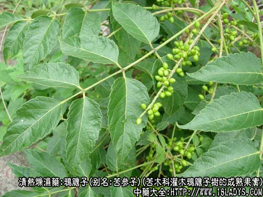
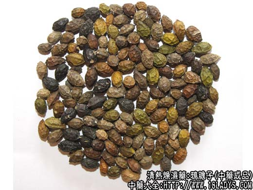
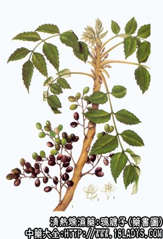

鸦胆子为较常用中药。始载《本草纲目拾遗》。
别名：苦参子、鸭蛋子。
来源：为苦木科植物多年生灌木鸦胆子树的成熟果实。多野生。
产地：主产于广东、广西。此外福建、台湾等省也有分布。
性状鉴别：核果卵圆形，长6～8毫米，直径4～5毫米，外表面黄棕色或黑褐色，有隆起的网状皱纹，果实两侧有明显的棱脊。壳坚硬而脆，内含种子一枚，淡黄绿色或淡黄白色，富油脂。气微，味极苦。
以果实成熟、饱满，粒均匀，子仁黄白色、油足者为佳。
主要成分：鸦胆子苦素A、B、C、D、E、F及G。另含鸦胆子甙、鸦胆子油。
功效与作用：1、抗阿米巴原虫：体外和体内（动物）实验，均证实有杀灭或抑制阿米巴原虫的作用，有效成分分为其葡萄糖甙。
2、抗疟：动物实验能抑制鸡疟原虫繁殖。
3、对赘疣细胞有毒性作用，能使细胞破坏，细胞核固缩，最后细胞坏死脱落，故外用可治皮肤疣。
4、抗病毒：对甲型流行感冒PR8有抑制作用。
炮制：生用，用时捣碎。
性味：苦寒。
归经：入大肠经。
功能：燥湿、杀虫。
主治：痢疾、疟疾，外用捣敷治痔疮赘疣等症。
临床应用：1、治疗阿米巴痢疾。对急性患者效果良好，优于白头翁，能使症状迅速消失，治愈率约80%。对慢性阿米巴痢疾和带阿米巴的病人，也有较好治疗效果。服鸦胆子兼服白头翁汤，或口服鸦胆子兼用鸦胆子仁的水浸液灌肠，效果更佳。
2、曾试用于治疗疟疾，但疗效不高，现已少用。
3、外用治鸡眼、皮肤寻常疣。用鸦胆子油或碎仁数粒捣烂后，涂敷于患处，可使赘疣脱下，如能先将皮肤患处稍擦损然后在敷药，效果更好。鸦胆子油能刺激正常皮肤引起皮炎，用时不要使油触及正常皮肤。
使用注意：鸦胆子对肠胃有刺激，可引起呕吐、腹痛、轻泻或腹部坠胀等副反应，要装入胶囊服用，或用桂圆肉包裹服用，以减少刺激性。孕妇和幼儿不宜使用。
用量：内服每次10～15粒（小儿每岁粒），一日三次。
处方举例：鸦胆子仁15粒，用桂圆肉包裹（或装入胶囊，每囊5粒），饭后用沙塘水送服，每日三次，连用7～10天。